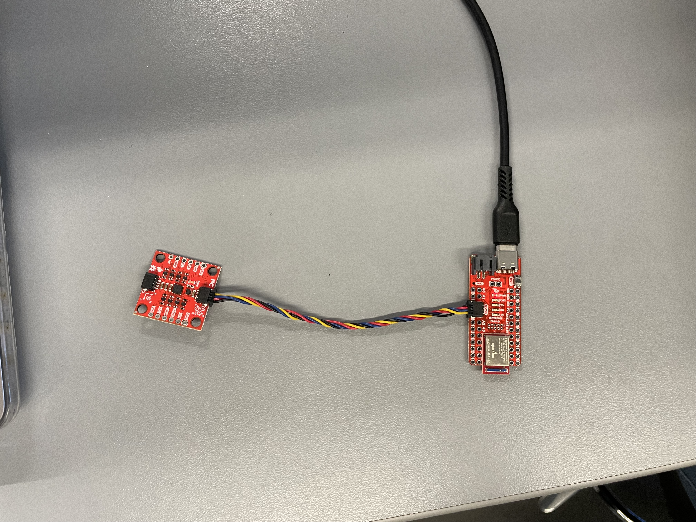
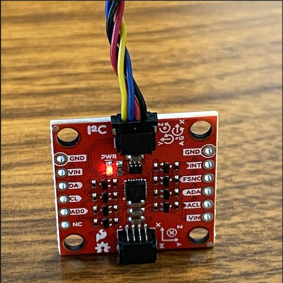
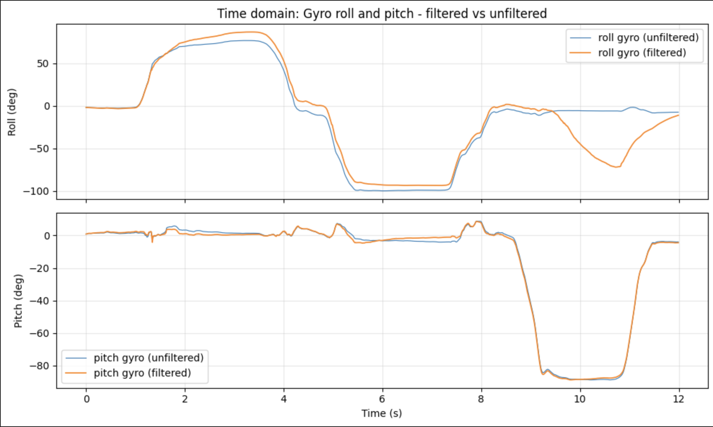
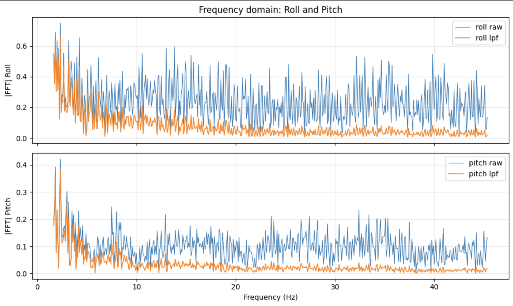
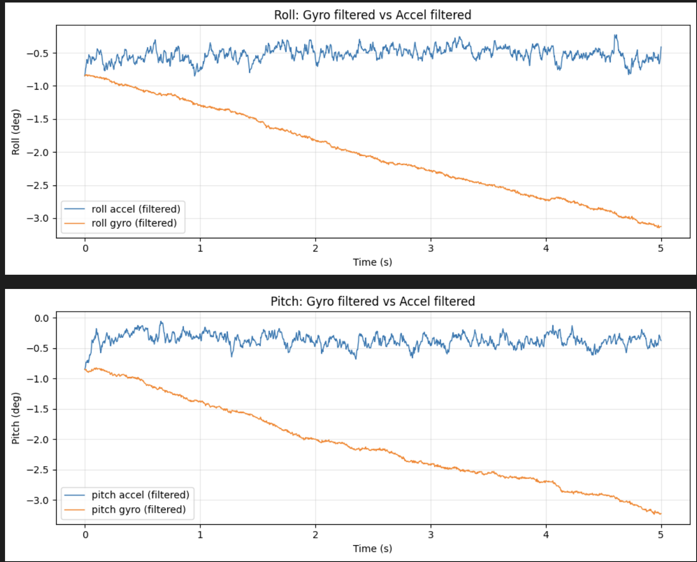
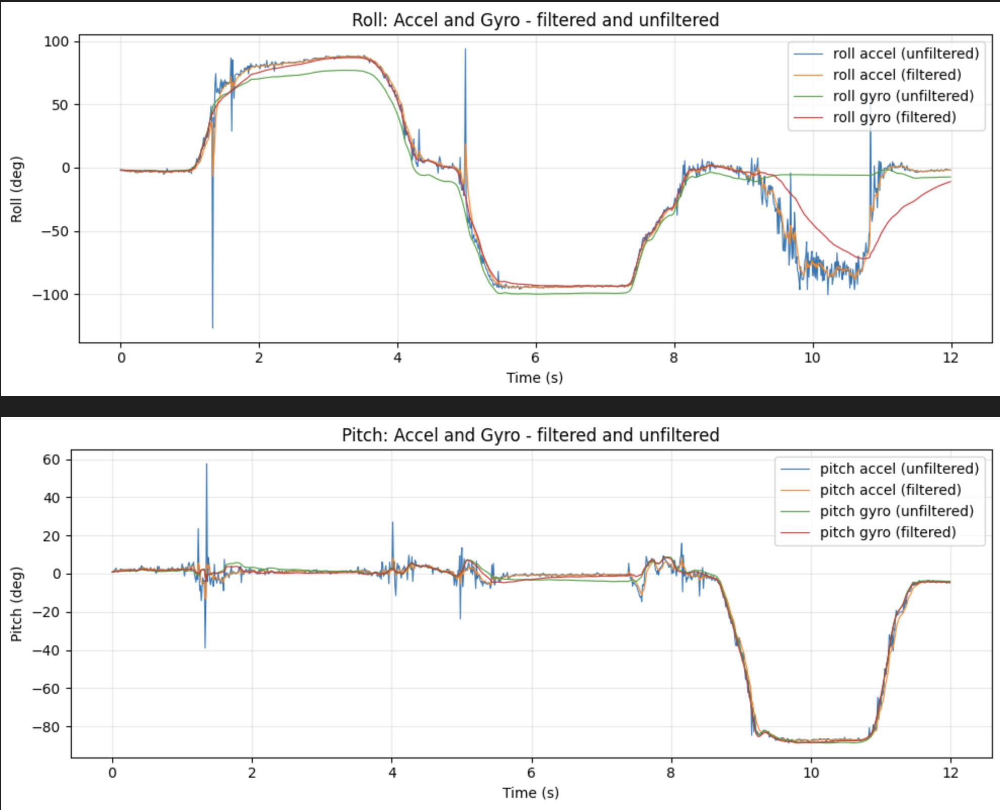

Lab 2: IMU
Overview
This lab integrates an ICM-20948 IMU with the Artemis via QWIIC, streams time-stamped orientation data, and compares accelerometer-based orientation against gyroscope integration with a complementary filter.
1. Lab Tasks
1.1 Set up the IMU
The SparkFun ICM-20948 Arduino library was installed and the sensor was connected to the Artemis over QWIIC. Sensor output was verified using the Example1_Basics sketch. A rotation demonstration video shows the physical motion alongside the printed roll and pitch readout.

#include "ICM_20948.h"
#define SERIAL_PORT Serial
#define WIRE_PORT Wire
#define AD0_VAL 1
ICM_20948_I2C myICM;
void setup() {
SERIAL_PORT.begin(115200);
WIRE_PORT.begin();
WIRE_PORT.setClock(400000);
myICM.begin(WIRE_PORT, AD0_VAL);
SERIAL_PORT.println(myICM.statusString());
}const int LED_PIN = LED_BUILTIN;
pinMode(LED_PIN, OUTPUT);
for (int i = 0; i < 3; i++) {
digitalWrite(LED_PIN, HIGH);
delay(300);
digitalWrite(LED_PIN, LOW);
delay(100);
}Initialization of the sensor returned: OK1.2 AD0_VAL definition
AD0_VAL selects the last bit of the I2C address for the ICM-20948. On the SparkFun breakout, the default behavior uses AD0_VAL = 1 unless the ADR jumper is closed, in which case the value becomes 0. In this build, AD0_VAL = 1 was used and initialization succeeded.
#define WIRE_PORT Wire
#define AD0_VAL 1
ICM_20948_I2C myICM;1.3 Acceleration and gyroscope data behavior
Accelerometer axes vary with gravity direction as the IMU is rotated or flipped. Gyroscope outputs spike during rotation and return near zero when stationary. See (section 1.1.3).
myICM.getAGMT();
float gx = myICM.gyrX();
float gy = myICM.gyrY();
float gz = myICM.gyrZ();
float ax = myICM.accX() / 1000.0;
float ay = myICM.accY() / 1000.0;
float az = myICM.accZ() / 1000.0;2. Accelerometer
2.1 Pitch and roll from accelerometer
Roll and pitch were computed from accelerometer measurements using:
roll = atan2(ay, az)
pitch = atan2(-ax, sqrt(ay2 + az2))
The outputs were converted from radians to degrees.


float roll_rad = atan2(ay, az);
float pitch_rad = atan2(-ax, sqrt(ay * ay + az * az));
float roll_deg = roll_rad * 180.0f / (float)M_PI;
float pitch_deg = pitch_rad * 180.0f / (float)M_PI;2.2 Accelerometer accuracy
A two-point calibration was used by measuring the extreme orientations of each axis to estimate bias and scale factor. The measured data and computed errors are shown below. All axes were within 2% error, indicating the accelerometer is accurate and does not require further tuning.
AX_G:-0.004|AY_G:-0.003|AZ_G:1.008|ROLL_DEG:-0.221|PITCH_DEG:0.277
AX_G:-0.002|AY_G:0.000|AZ_G:-1.008|ROLL_DEG:179.944|PITCH_DEG:0.166
AX_G:-0.023|AY_G:0.982|AZ_G:0.013|ROLL_DEG:89.202|PITCH_DEG:1.394
AX_G:0.006|AY_G:-1.010|AZ_G:0.012|ROLL_DEG:-89.308|PITCH_DEG:-0.387
AX_G:1.000|AY_G:-0.015|AZ_G:0.003|ROLL_DEG:-75.529|PITCH_DEG:-89.105
AX_G:-1.002|AY_G:-0.022|AZ_G:0.004|ROLL_DEG:-79.159|PITCH_DEG:88.665
X-axis:
Measured: +1.000 g, -1.002 g
Bias = -0.001 g
Scale factor ≈ 0.999
Max error ≈ 0.1%
Y-axis:
Measured: +0.982 g, -1.010 g
Bias = -0.014 g
Scale factor ≈ 1.004
Max error ≈ 0.018 g (1.8%)
Z-axis:
Measured: +1.008 g, -1.008 g
Bias = 0.000 g
Scale factor ≈ 0.992
Max error ≈ 0.008 g (0.8%)
All axis have less than a 2% error, which indicates that they are very accurate and do not need tuning.2.3 Frequency spectrum noise analysis (FFT)
A Fourier transform of all three accelerometer axes is shown below. The noise appeared uniform across the tested conditions, so a cutoff frequency was not selected from this dataset. If high-frequency noise became dominant, a low-pass filter would be appropriate. If low-frequency drift became dominant, a high-pass filter would be appropriate. If a specific frequency band needed isolation, a band-pass filter would be used. See (section 2.1.1a) for the time-domain gyro roll and pitch plot used for comparison.

t_ms = np.array(imu_time_ms)
ax = np.array(imu_ax); ay = np.array(imu_ay); az = np.array(imu_az)
order = np.argsort(t_ms)
t_ms = t_ms[order]; ax = ax[order]; ay = ay[order]; az = az[order]
t_sec = (t_ms - t_ms[0]) / 1000.0
dts = np.diff(t_sec); dts = dts[dts > 0]
dt = np.median(dts) if len(dts) else 0.01
n = len(t_sec)
ax_fft = fft(ax - np.mean(ax))
ay_fft = fft(ay - np.mean(ay))
az_fft = fft(az - np.mean(az))
freqs = fftfreq(n, dt)3. Gyroscope
3.1 Pitch and roll from gyro integration
The gyroscope outputs angular rate (deg/s), which was integrated over time to estimate angles. Integration drifts over time, especially when stationary due to bias. A complementary filter reduces drift by blending gyro integration with an accelerometer-based estimate.

float dt_s = (time_array[i] - time_array[i - 1]) / 1000.0f;
if (dt_s <= 0.0f) dt_s = 0.001f;
roll_gyro_deg_array[i] = roll_gyro_deg_array[i - 1] + gx * dt_s;
pitch_gyro_deg_array[i] = pitch_gyro_deg_array[i - 1] + gy * dt_s;3.2 Complementary filter
The complementary filter used ALPHA_ACCEL = 0.02, applying a small accelerometer correction each update while relying primarily on gyro integration. This stabilizes drift while reducing sensitivity to accelerometer vibration.

static const float ALPHA_ACCEL = 0.02f;
float dt_s = (time_array[i] - time_array[i - 1]) / 1000.0f;
if (dt_s <= 0.0f) dt_s = 0.001f;
roll_gyro_filt_deg_array[i] =
(roll_gyro_filt_deg_array[i - 1] + gx * dt_s) * (1.0f - ALPHA_ACCEL) +
ALPHA_ACCEL * roll_deg_array[i];
pitch_gyro_filt_deg_array[i] =
(pitch_gyro_filt_deg_array[i - 1] + gy * dt_s) * (1.0f - ALPHA_ACCEL) +
ALPHA_ACCEL * pitch_deg_array[i];4. Sample Data
4.1 Sampling speed
The effective data rate was computed from the time-stamped sample stream in Python.
num_points = len(imu_time_ms)
if num_points >= 2:
t_ms_arr = np.array(imu_time_ms)
t_ms_arr = t_ms_arr[t_ms_arr != 0]
if len(t_ms_arr) >= 2:
time_span_ms = t_ms_arr[-1] - t_ms_arr[0]
time_span_sec = time_span_ms / 1000.0
data_rate_hz = len(t_ms_arr) / time_span_sec if time_span_sec > 0 else 0
print(f"Number of data points: {num_points}")
print(f"Time span: {time_span_sec:.3f} s ({time_span_ms} ms)")
print(f"Data rate: {data_rate_hz:.2f} Hz")
else:
print(f"Number of data points: {num_points}")
print("Not enough valid timestamps to compute data rate.")
else:
print(f"Number of data points: {num_points}")
print("Need at least 2 points to compute data rate.")Number of data points: 1091
Time span: 11.992 s (11992 ms)
Data rate: 90.98 Hz4.2 Time-stamped IMU data stored in arrays
Data were stored in fixed-size arrays on the Artemis and transmitted over BLE as RP packets. The Python receiver stored received values into arrays for plotting and analysis.
const int array_length = 4800;
int time_array[array_length];
float roll_deg_array[array_length];
float pitch_deg_array[array_length];
float roll_lpf_deg_array[array_length];
float pitch_lpf_deg_array[array_length];
float roll_gyro_deg_array[array_length];
float pitch_gyro_deg_array[array_length];
float roll_gyro_filt_deg_array[array_length];
float pitch_gyro_filt_deg_array[array_length];def notification_handler(uuid, byteArray):
raw = ble.bytearray_to_string(byteArray).strip()
if not raw.startswith("RP:"):
return
parts = [p.strip() for p in raw.split("RP:", 1)[1].split(",")]
imu_time_ms.append(int(float(parts[0])))
imu_roll_deg.append(float(parts[1]))
imu_pitch_deg.append(float(parts[2]))
imu_roll_filt_deg.append(float(parts[3]))
imu_pitch_filt_deg.append(float(parts[4]))
imu_roll_gyro_deg.append(float(parts[5]))
imu_pitch_gyro_deg.append(float(parts[6]))
imu_roll_gyro_filt_deg.append(float(parts[7]))
imu_pitch_gyro_filt_deg.append(float(parts[8]))

4.3 Stream 10 seconds of IMU data over Bluetooth
Ten seconds of time-stamped IMU-derived roll and pitch data were captured and streamed over BLE. The packet format was: RP:t_ms,roll,pitch,roll_lpf,pitch_lpf,roll_gyro,pitch_gyro,roll_gyro_f,pitch_gyro_f
ble.start_notify(ble.uuid['RX_STRING'], notification_handler)
ble.send_command(CMD.GET_IMU_DATA_LOOP, "10000")
ble.send_command(CMD.SEND_IMU_DATA, "")tx_estring_value.clear();
tx_estring_value.append("RP:");
tx_estring_value.append(time_array[i]);
tx_estring_value.append(",");
tx_estring_value.append(roll_deg_array[i]);
tx_estring_value.append(",");
tx_estring_value.append(pitch_deg_array[i]);
tx_estring_value.append(",");
tx_estring_value.append(roll_lpf_deg_array[i]);
tx_estring_value.append(",");
tx_estring_value.append(pitch_lpf_deg_array[i]);
tx_estring_value.append(",");
tx_estring_value.append(roll_gyro_deg_array[i]);
tx_estring_value.append(",");
tx_estring_value.append(pitch_gyro_deg_array[i]);
tx_estring_value.append(",");
tx_estring_value.append(roll_gyro_filt_deg_array[i]);
tx_estring_value.append(",");
tx_estring_value.append(pitch_gyro_filt_deg_array[i]);
tx_characteristic_string.writeValue(tx_estring_value.c_str());

5. Record a Stunt
Five minutes of driving was recorded to establish a baseline. Forward acceleration produced pitch transients. Turning produced roll transients. Vibration increased high-frequency noise in the accelerometer-derived estimate. The complementary filtered estimate remained stable compared to the raw accelerometer estimate.
Discussion
This lab demonstrated end-to-end IMU integration from wiring and sensor bring-up through wireless streaming and filtering. The accelerometer estimate provided a gravity-referenced orientation that was stable over long time windows, while gyroscope integration captured short-term motion but drifted over time. The complementary filter blended both behaviors into a more robust roll and pitch estimate suitable for mobile robot motion.